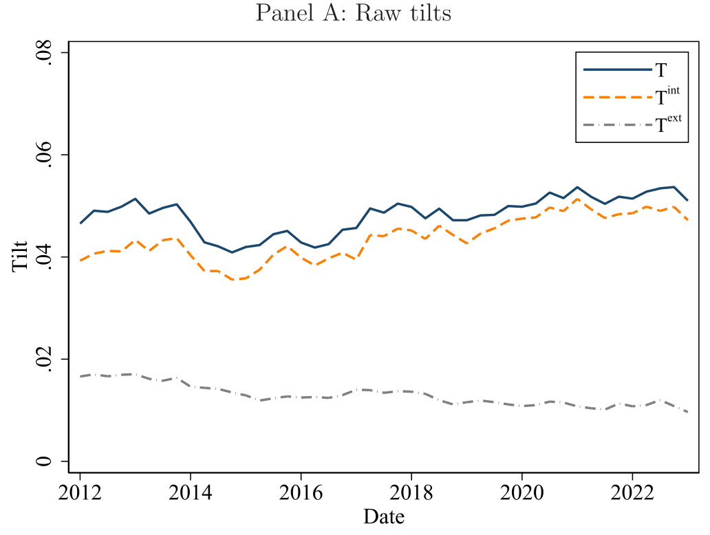
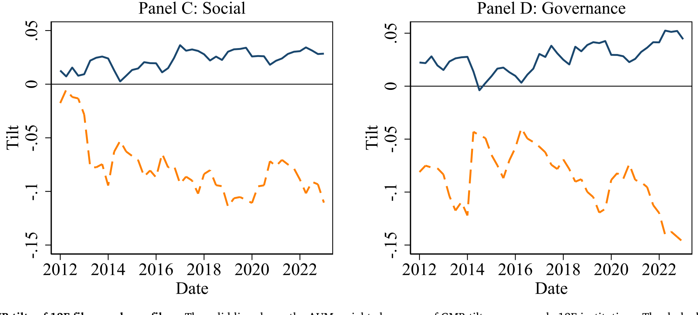
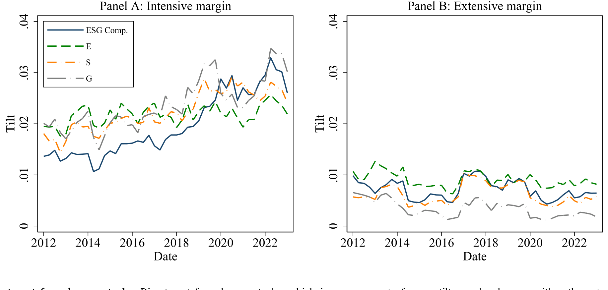
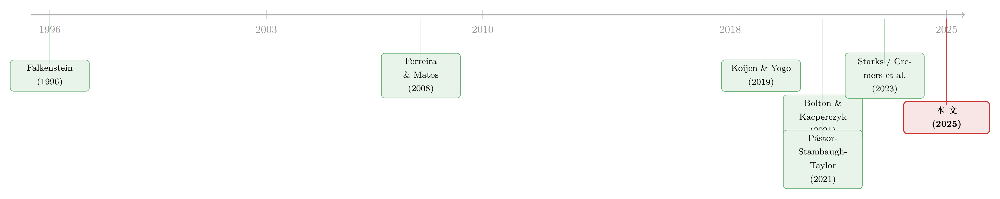

三万五千亿美元的 ESG，到底「倾斜」了多少？
本文读的是 Pástor, Stambaugh & Taylor (2025, Journal of Financial Economics)：作者提出一套「组合倾斜（portfolio tilt）」的估计框架，在控制住规模、价值等非 ESG 特征之后，把 2012–2023 年间美国机构因 ESG 而真正偏离市场组合的那一部分权重单独量出来。结论是——整个投资业的 ESG 倾斜常年只占总资产的约 6%，但它占机构「主动偏离」的比例从 17% 升到 27%；最大的机构越来越绿，其余机构和散户越来越棕；对棕色股票的撤资，几乎总是「减仓」而非「清仓」。
1 一个被反复引用、却没人量过的数字
几乎每一篇谈 ESG 投资的论文，开篇都会甩出一个吓人的数字：到 2020 年，全球以 ESG 标准管理的资产规模已达 35 万亿美元。这类句子读多了，你会下意识地点头：ESG 真火。
可是，如果你停下来追问一句——这 35 万亿，到底有多少是「为了 ESG」才那样配置的？答案是：没人知道。
这正是本文的出发点。一个机构在简历上签了联合国责任投资原则（UN Principles for Responsible Investment, UNPRI），不代表它的每一分钱都在按 ESG 配置；一只基金重仓了苹果、微软，看上去「很绿」，但那也许只是因为它本来就偏好大盘成长股，而大盘成长股恰好 ESG 评分高而已。换句话说，「持有了绿色股票」和「为了绿色而去持有」，是两件完全不同的事。前者人人会算，后者——才是这篇论文要量的东西。
作者给这个「后者」起了个名字：ESG 相关的组合倾斜（ESG-related portfolio tilt）。整篇文章，说穿了就是反复把一件事讲透：怎样把「因为 ESG」而偏离市场的那部分权重，从一堆混杂的动机里干净地剥出来，然后加总，看它到底有多大。
2 「倾斜」是什么：一个反事实的差
先说定义，因为这篇论文的全部力量都压在这个定义上。
设投资者 \(i\) 在股票 \(n\) 上的组合权重为 \(w_{in}\)。作者把这只股票上的「ESG 相关倾斜」定义为：
这里 \(\mathcal{C}\) 是股票的全部 ESG 特征，\(\mathcal{C}_0\) 是它们的中性值——把每只股票的每个 ESG 特征都替换成市场组合的对应取值；\(\mathcal{X}\) 则是规模、账面市值比等非 ESG 特征。
这个定义的精髓，是那个被减去的反事实项。\(\Delta_{in}\) 衡量的是：在非 ESG 特征 \(\mathcal{X}\) 保持不变的前提下，仅仅因为这只股票的 ESG 特征不同于市场平均，投资者 \(i\) 多放（或少放）了多少权重。为什么一定要按住 \(\mathcal{X}\)？因为 ESG 和非 ESG 特征是相关的——Pástor et al. (2022) 早就指出，账面市值比低的股票（成长股）往往环境评分更高。如果不控制账面市值比，你会把「偏好成长股」误记成「偏好绿色」。
这正是作者强调的第一条「美德」。文章后面给出一个触目惊心的对照：样本末期机构整体的绿减棕（green-minus-brown）倾斜是 4.2%；若不控制非 ESG 特征，这个数字会膨胀到 11.2%——近三倍；若用最粗暴的「绿股总权重减棕股总权重」，更是高达 27.6%。控制变量不是技术细节，它直接决定你测出来的 ESG 是真是假。
接着，一个自然的问题是：一个机构「偏离」一只股票，可以有两种方式。一是要不要持有它（持或不持），二是持有了之后放多重。作者把这两条边都算进来——这是他们的第二条美德。
利用 \(E[w_{in}\mid\cdot]=\text{Prob}\{w_{in}>0\mid\cdot\}\times E[w_{in}\mid w_{in}>0,\cdot]\)，定义两个量：
$$\pi(\tilde{\mathcal{C}}) \equiv \text{Prob}\{w_{in}>0\mid \tilde{\mathcal{C}},\mathcal{X}\}, \qquad w^{+}(\tilde{\mathcal{C}}) \equiv E[w_{in}\mid w_{in}>0;\tilde{\mathcal{C}},\mathcal{X}]$$
\(\pi\) 是「持有这只股的概率」，\(w^{+}\) 是「持有了之后的预期权重」。于是 \(\Delta_{in}=\pi(\mathcal{C})w^{+}(\mathcal{C})-\pi(\mathcal{C}_0)w^{+}(\mathcal{C}_0)\)，可以干净地拆成两项：
$$\Delta_{in}=\Delta_{in}^{ext}+\Delta_{in}^{int}$$
$$\Delta_{in}^{ext}=w^{+}(\mathcal{C}_0)\{\pi(\mathcal{C})-\pi(\mathcal{C}_0)\}, \qquad \Delta_{in}^{int}=\pi(\mathcal{C})\{w^{+}(\mathcal{C})-w^{+}(\mathcal{C}_0)\}$$
外延边际（extensive margin） \(\Delta_{in}^{ext}\) 只动「持不持有」的概率，不动持有后的权重：ESG 让你愿不愿意把这只股放进组合？内涵边际（intensive margin） \(\Delta_{in}^{int}\) 反过来，只动持有后的权重：在已经持有的前提下，ESG 让你加了多少、减了多少？
最后，把每只股票上的偏离取绝对值、除以二、加总，就得到投资者层面的总倾斜：
$$T_i = \frac{1}{2}\sum_{n=1}^{N}|\Delta_{in}|, \qquad T_i^{int}=\frac{1}{2}\sum_{n=1}^{N}|\Delta_{in}^{int}|, \qquad T_i^{ext}=\frac{1}{2}\sum_{n=1}^{N}|\Delta_{in}^{ext}|$$
除以二是为了避免重复计数：因为 \(\sum_n\Delta_{in}=0\)（每多配一只必然少配另一只），正的偏离一定被负的偏离对冲掉，绝对值之和恰好把同一笔挪动算了两遍。再按资产规模 \(A_i\) 加权汇总到行业层面：
$$T=\frac{1}{A}\sum_{i\in\mathcal{I}}A_i T_i, \qquad A=\sum_{i\in\mathcal{I}}A_i$$
\(T\) 就是「整个投资业资产中被 ESG 倾斜了的比例」。注意一个细节：一般情况下 \(T_i\neq T_i^{int}+T_i^{ext}\)，只有 \(T_i\le T_i^{int}+T_i^{ext}\)——因为内涵与外延偏离若方向相反，绝对值会相互抵消。这个不等式后面会用上。
3 估计：一个 Heckman 式的两段模型
要算 \(\pi\) 和 \(w^{+}\)，需要一个组合权重的计量模型。这里作者没有走简单的「把权重对特征回归」这条路，原因有二：一是一只股票的权重取决于它相对于组合中其他股票的特征（是个截面相对量），二是数据里大量股票的 \(w_{in}=0\)（根本没持有），简单回归处理不了这种「质量点」。
于是他们用了一个两段式选择模型——外延边际用一个 probit 式的方程估计持有概率 \(\pi\)，内涵边际在「持有」的子样本上估计条件权重 \(w^{+}\)，思路上正是经典的 Heckman (1979) 样本选择校正。把两段的估计代回 \(\Delta_{in}^{ext}\)、\(\Delta_{in}^{int}\)，再逐季加总，就得到了上面那一整套倾斜指标。
值得一提的是第三条美德：作者允许 E、S、G 三个维度分别进入模型，而不是先压成一个综合分。理由很实在——有的投资者只在乎 G（治理），某只股票 G 好但 S 差、另一只反过来，综合分会把两者评成一样，但在乎 G 的人会超配前者、低配后者，这种倾斜只有 G 能解释、综合分会漏掉。文章估计，若只用综合分，会把总倾斜低估超过 40%。
4 核心结果：6%，而且内涵远大于外延
把这套机器开起来，作者用 13F 申报的机构持仓（2012–2023），算出了第一个、也是最反复出现的数字：
整个投资业的 ESG 相关倾斜，常年稳定在总资产的约 6%，到样本末期 2012–2023 升至 6.5%。
这个数字一出，开篇那个 35 万亿的故事立刻被改写。是的，签 UNPRI 的机构管理着样本中 76.1% 的美股 AUM——ESG「被广泛背书」毫无疑问；但真正因 ESG 而挪动的钱，只有 6% 上下。背书是一回事，下注是另一回事。
然后是内涵与外延的分解。两条边都显著，但内涵边际是外延边际的 2 到 4 倍——也就是说，机构表达 ESG 偏好，主要不是靠「持不持有某只股」，而是靠「持有之后放多重」。如图 9 所示，总倾斜 \(T\) 与其内涵、外延分量随时间的走势，把这件事讲得很清楚。

Figure 9: plots aggregate ESG tilts — 𝑇, 𝑇𝑖𝑛𝑡, and 𝑇𝑒𝑥𝑡 from Eqs. (10)
这个「内涵 > 外延」的结论，会一路贯穿到后面对撤资的讨论，是全文最有故事性的一根线。
5 谁在变绿，谁在变棕
测出了「多大」，下一个问题是「朝哪个方向」。作者用绿减棕倾斜（GMB tilt, green minus brown）来刻画方向：先把每只股票按某个 ESG 维度分类——取值高于市场加权平均（中性值 \(g_0\)）的算「绿」，低于的算「棕」；再把每笔偏离分进四个抽屉：
$$\Delta_{in}^{OG}: \Delta_{in}>0,\ g_n\ge g_0 \quad(\text{超配绿股，绿倾斜})$$ $$\Delta_{in}^{UB}: \Delta_{in}<0,\ g_n< g_0 \quad(\text{低配棕股，绿倾斜})$$ $$\Delta_{in}^{OB}: \Delta_{in}>0,\ g_n< g_0 \quad(\text{超配棕股，棕倾斜})$$ $$\Delta_{in}^{UG}: \Delta_{in}<0,\ g_n\ge g_0 \quad(\text{低配绿股，棕倾斜})$$
绿减棕，就是绿倾斜减去棕倾斜。结果有意思：
- 整体在变绿，但驱动力高度集中。当作者按 AUM 把机构分成前 1/3、中 1/3、后 1/3（以第 33、66 百分位切分），只有最大的那 1/3 呈现正且上升的 GMB 倾斜；中段和底段机构的 GMB 倾斜大多为负、且在恶化——也就是又棕、又越来越棕。
- 最大的单一机构 BlackRock，其 GMB 倾斜一路升到 2020 年达到峰值，此后回落。
- 与 13F 机构相对的另一端——非 13F 投资者（大多是散户）——整体组合在变棕，GMB 倾斜为负且持续下降。
换句话说，「投资业越来越绿」这句话是对的，但它几乎完全是头部巨头的故事；把镜头拉到普通机构和家庭，画面正好相反。13F 申报者与非申报者的分化，见图 4。

Figure 4: GMB tilts of 13F filers and non-filers. The solid line shows the AUM-weighted average of GMB tilt across sample 13F institutions. The dashed
谁更绿？作者还做了横截面的切分：UNPRI 签署者的 GMB 倾斜显著更绿——而且不只是横截面上更绿，在时间序列上，机构往往在签署 UNPRI 之后变得更绿（至少在环境维度上）。欧洲机构持有的美股比美国机构持有的更绿。反方向上，银行比其他机构更棕，尤其比保险公司棕。
6 反转：撤资，几乎从不是「清仓」
如果说前面是铺垫，那这一节是全文我最喜欢的反转。
「从棕色股票撤资（divestment）」是可持续投资里一个老掉牙的口号。直觉上，撤资应该是一个外延边际的动作——把脏股票从组合里剔出去，权重归零。可作者的分解给出了完全不同的图景：
对棕色股票的撤资，绝大部分发生在内涵边际——是「减仓」，而不是「清仓」。 机构降低了对棕股的持仓，却很少把它们彻底踢出组合。
更妙的是，这个结论连单只共同基金层面都成立。有人可能怀疑：13F 把一整个基金家族的持仓汇总在一起，会不会把「这只基金清仓、那只基金加仓」的对冲掩盖掉？于是作者用 S12 数据把基金家族拆开，逐只基金重算。结论是：家族内部的相互对冲确实存在，但很小——2023 年只占基金家族 AUM 的 1.8%，约合总 AUM 的 0.5%，仅为总 ESG 倾斜的十四分之一。拆开看，撤资仍然是部分的、减仓式的。对棕色股票的撤资走势，见图 5。

Figure 5: Divestment from brown stocks
这个「部分而非彻底」的事实，对那一整套关于撤资能否影响企业行为的争论，是一记很实的注脚：如果连最该清仓的钱都只是减了减仓，那么靠撤资施压的渠道，可能比口号里弱得多。
别忘了第 2 节那个不等式 \(T_i\le T_i^{int}+T_i^{ext}\)。正因为内涵与外延可能反向抵消，作者才坚持分别测量两条边——把它们压成一个总数，恰恰会抹掉「减仓而不清仓」这种最有信息量的结构。
至于共同基金本身：它们的总 ESG 倾斜在 AUM 的 6%–10% 之间，主动管理基金更高，达 10%–13%；带 ESG 标签的基金绿倾斜更大、棕倾斜更小；Morningstar 地球仪评级更高的基金也更绿。
7 稳健性：换数据、换口径，结论不动
一篇靠「测量」立身的论文，最大的软肋就是「你测的是 ESG，还是你用的那家评级机构的口味？」作者对此交代得相当干净：
- 主结果用 MSCI 评级；换成 Sustainalytics 重做，总 ESG 倾斜在
5.9%–6.7%之间，主要结论不变。 - 用行业调整后的 ESG 分数（减去行业均值）重算，倾斜略小，约
4%–5%，但行为模式（绿、棕、时间走势）与未调整时一致。
还有一个值得点出的概念边界：ESG 投资不等于指数投资。纯指数投资者持有市场组合，作者的框架因为控制了市场权重，会给指数投资者赋予零 ESG 倾斜——哪怕市场组合本身这十年在变绿。这一点把「被动持有」和「主动表达 ESG 偏好」划清了界限。（关于「买指数其实是在买一套规则、而非中性的整个市场」，可参见《你以为买的是「整个市场」，其实买的是一套交易规则》。）
文章还提出了第三个尺度问题：ESG 倾斜相对 AUM 也许不大，但相对机构「本就愿意偏离市场的总量」呢？作者借用 Cremers and Petajisto (2009) 的主动份额（active share）作分母，发现 ESG 倾斜平均约为主动份额的 20%；而且这个比例从 2012 年的 17% 升到 2023 年的 27%。也就是说：ESG 占资产的份额没怎么涨，但它占机构「主动动作」的份额，明显在涨。
8 文献脉络
把这篇论文放回它生长的那条线里，故事会更清楚。
最早，机构持仓研究关心的是机构偏好什么样的股票：Falkenstein (1996)、Gompers and Metrick (2001) 发现机构偏爱大盘、流动性好的股票；Ferreira and Matos (2008) 进一步发现机构偏好治理（G）好的公司——这其实已经是 ESG 倾斜的雏形，只是当时没人这么叫。Hong and Kostovetsky (2012) 则发现，民主党倾向的基金经理会少配「社会不负责任」的公司，把价值观写进了组合。
接着，研究方法发生了一次范式升级。Koijen and Yogo (2019) 的需求体系（demand system）方法，把「谁的需求决定了价格」变成了可估计的对象（这条线在本博客里讨论过不少，可参见《异象收益究竟是谁推动的？》与《机构到底信什么？》）。
然后，气候与 ESG 浪潮把焦点推到「绿与棕」。Bolton and Kacperczyk (2021) 发现机构低配高碳排企业；Nofsinger et al. (2019) 发现机构低配环境社会指标差的股票；Starks (2023) 在其美国金融学会主席演讲里系统梳理了「价值（value）与价值观（values）」之争。与此同时，Pástor, Stambaugh & Taylor (2021, 2022) 在均衡里论证了绿色资产的预期收益更低——这正是「测量 ESG 倾斜」之所以重要的理论根基：倾斜不是免费的午餐，它带着收益的代价（关于绿色溢价是否归零，可参见《绿色溢价真的归零了吗？》）。

但前述所有研究都有一个共同的空白：它们告诉你机构「偏向」ESG，却没有量出总量到底有多大，也没有把绿与棕、内涵与外延分开。最接近的 Cremers et al. (2023) 提出了「主动 ESG 份额」，但那衡量的是基金 ESG 评分分布相对基准的差异，并把它和业绩挂钩，与本文的「倾斜总量」是两回事。本文正是补上这个空白：第一次给出投资业 ESG 投资的规模、方向、与边际结构的系统估计。
9 评论与延伸（Q&A + 研究方向）
(a) 几个可能的疑问
Q：这个「倾斜」和 Pástor et al. (2021) 里的 ESG 倾斜是一回事吗？
不完全是。两者形式相似（绝对偏离之和除以二），但本文的 \(\Delta_{in}\) 不是权重对市场权重的简单偏离，而是「真实权重」减去「把 ESG 换成中性值后的反事实权重」，并且全程按住非 ESG 特征 \(\mathcal{X}\)。这一步反事实校正，是本文测出来的 6% 与朴素口径下 27.6% 之间差异的来源。
Q：6% 这个数，会不会只是 MSCI 评级的产物？
作者专门回应了这点。换成 Sustainalytics，总倾斜落在 5.9%–6.7%；用行业调整分数，落在 4%–5%、模式不变。结论对评级口径不敏感，这让 6% 这个量级比较可信。
Q：为什么内涵边际比外延边际大那么多？
因为机构表达 ESG 偏好的方式，主要是「在已持有的股票上调权重」，而不是「决定持不持有」。这也解释了撤资为何是减仓而非清仓——清仓是外延动作，而真实世界的撤资几乎都落在内涵边际上。
Q：13F 汇总会不会掩盖了机构内部的对冲倾斜？
会，但量不大。作者用 S12 把共同基金家族拆开重算，家族内对冲在 2023 年仅占基金家族 AUM 的 1.8%、总 AUM 的 0.5%，约为总 ESG 倾斜的十四分之一。作者坦承 13F 口径可能低估真实倾斜，但低估幅度有限。
Q：散户真的在「变棕」吗，还是只是被动接盘？
作者测的是非 13F 投资者整体组合的 GMB 倾斜为负且下降。这未必是散户在主动「拥抱棕色」，更可能是头部机构大量买入绿股后，剩下的绿股供给减少、棕股相对落到散户手里——是均衡的镜像。区分「主动变棕」与「被动接盘」，是这套截面测量本身回答不了的。
Q：把指数投资者的 ESG 倾斜定义为零，合理吗？
这是一个定义选择，不是经验发现。作者的立场是：纯持有市场组合不构成「ESG 投资」，所以控制市场权重后给指数投资者赋零倾斜。但如果某个指数（比如 ESG 指数）本身就内含 ESG 筛选，跟踪它的被动资金在这套框架下会被算成零——这是该口径的一个边界，需要使用者自行判断。
(b) 几个可能的研究问题与提案
1. 把「绿色倾斜」搬到公司债市场
【经济故事】本文的舞台是美股与 13F。但绿色溢价、撤资压力在信用市场可能更直接——棕色企业的融资成本、利差，理应对债权人的撤资更敏感，因为债权人不像股东那样能靠「投票」施压，只能用脚。 【可行性】中。债券持仓数据（如保险公司 NAIC、共同基金 N-PORT）可得，ESG 评级可对接；难点在于债券的「市场组合」与中性值如何定义，以及一二级市场分割带来的权重测量问题。识别上可借本文的反事实框架，但需重做选择模型。
2. 外资持有人是不是「绿色」的边际定价者？
【经济故事】本文发现欧洲机构持有的美股更绿。一个自然的延伸是：跨境资金的「绿色偏好」是否会被带到它所流入的市场，进而影响当地绿/棕资产的相对价格与流动性？外资作为边际投资者的身份，可能让绿色溢价具有「输入性」。 【可行性】中高。可用 13F 中可识别国别的机构、配合 TIC 或 Koijen-Yogo 式需求体系做。识别难点是外资绿色偏好与汇率、母国监管冲击的共线性。
3. UNPRI 签署的「事件」识别
【经济故事】本文已发现机构在签署 UNPRI 后变绿（环境维度）。但签署是自选择的——是「本就要变绿才去签」，还是「签了之后被约束着变绿」？这关乎 UNPRI 到底是承诺装置还是漂绿标签。 【可行性】高。签署日期可得，可做事件研究或 staggered DiD，用尚未签署者作对照。需警惕平行趋势：作者已观察到签署前后的差异，正式的动态处理效应图（event-study coefficients）会很有说服力。
4. 撤资的「减仓而非清仓」对企业实际行为的后果
【经济故事】既然撤资几乎都是减仓，那么靠撤资施压企业减排的渠道理应很弱。把基金层面的内涵边际撤资强度，对接到被撤资企业后续的碳排放、资本开支、发债成本，可以直接检验「弱撤资→弱影响」这条因果。 【可行性】中。持仓与排放数据可得；识别难点是撤资强度的内生性——需要找一个驱动撤资但不直接影响企业经营的工具（如基金被动跟踪的 ESG 指数成分调整）。
5. 把流动性维度加进倾斜
【经济故事】绿股集中在大盘、流动性好的股票，棕股反之。当头部机构集体加仓绿股，绿股流动性与棕股流动性会不会系统性分化？ESG 倾斜也许正在悄悄重塑横截面的流动性结构。 【可行性】中。可把本文的 GMB 倾斜与个股流动性指标（Amihud、价差）在面板上关联；识别上可利用大机构因指数纳入而被动加仓绿股的外生变动。
10 我的判断
这篇论文最大的贡献，是把一个被无数人挂在嘴边、却从没人认真量过的概念——「有多少钱真的在为 ESG 配置」——变成了一个可估计、可分解、可加总的对象。三条美德（控制非 ESG 特征、区分内涵与外延、允许 E/S/G 分别进入）环环相扣，每一条都对应一个具体的、被量化的偏差幅度（近两倍、2–4 倍、超 40%），这种「概念—方法—数字」的闭环非常扎实。而「6% 的资产、内涵远大于外延、撤资是减仓而非清仓、巨头变绿散户变棕」这一组发现，几乎重写了我们对 ESG 投资规模与结构的直觉。
要说对识别的担忧，我有两点。其一，整套结论依赖于「中性值 = 市场组合特征值」这个反事实锚点，以及那个两段式选择模型的设定；ESG 倾斜的绝对水平对模型设定有多敏感，文中虽有稳健性，但读者最好把 6% 理解为一个量级而非精确点估计。其二，这是一篇彻底的测量论文——它精彩地回答了「有多少、朝哪里、在哪条边际」，但刻意不碰「为什么」（财务动机？价值观？客户授权？）与「后果」（价格、企业行为）。这不是缺陷，是分工；但也正因如此，它真正的价值要等到后续研究把这套倾斜指标接上价格与实体经济，才会完全释放。
我最想看到的下一步，是把这套框架移到信用市场和跨境资金上去——债权人的撤资比股东更「硬」，外资的绿色偏好更可能具有输入性，而这两块恰恰是本文（美股、13F）照不到的地方。
参考文献
- Bolton, Patrick, Kacperczyk, Marcin (2021). Do investors care about carbon risk? Journal of Financial Economics 142(2), 517–549.
- Cremers, K. J. Martijn, Petajisto, Antti (2009). How active is your fund manager? A new measure that predicts performance. Review of Financial Studies 22(9), 3329–3365.
- Falkenstein, Eric G. (1996). Preferences for stock characteristics as revealed by mutual fund portfolio holdings. Journal of Finance 51(1), 111–135.
- Ferreira, Miguel A., Matos, Pedro (2008). The colors of investors' money: The role of institutional investors around the world. Journal of Financial Economics 88(3), 499–533.
- Gompers, Paul A., Metrick, Andrew (2001). Institutional investors and equity prices. Quarterly Journal of Economics 116(1), 229–259.
- Heckman, James J. (1979). Sample selection bias as a specification error. Econometrica 47(1), 153–161.
- Hong, Harrison, Kostovetsky, Leonard (2012). Red and blue investing: Values and finance. Journal of Financial Economics 103(1), 1–19.
- Koijen, Ralph S. J., Yogo, Motohiro (2019). A demand system approach to asset pricing. Journal of Political Economy 127(4), 1475–1515.
- Koijen, Ralph S. J., Richmond, Robert J., Yogo, Motohiro (2024). Which investors matter for equity valuations and expected returns? Review of Economic Studies 91(5), 2387–2424.
- Lewellen, Jonathan (2011). Institutional investors and the limits of arbitrage. Journal of Financial Economics 102(1), 62–80.
- Nofsinger, John R., Sulaeman, Johan, Varma, Abhishek (2019). Institutional investors and corporate social responsibility. Journal of Corporate Finance 58, 700–725.
- Pástor, Ľuboš, Stambaugh, Robert F., Taylor, Lucian A. (2021). Sustainable investing in equilibrium. Journal of Financial Economics 142(2), 550–571.
- Pástor, Ľuboš, Stambaugh, Robert F., Taylor, Lucian A. (2022). Dissecting green returns. Journal of Financial Economics 146(2), 403–424.
- Pástor, Ľuboš, Stambaugh, Robert F., Taylor, Lucian A. (2025). Green tilts. Journal of Financial Economics 174, 104173.
- Starks, Laura T. (2023). Presidential address: Sustainable finance and ESG issues—Value versus values. Journal of Finance 78(4), 1837–1872.